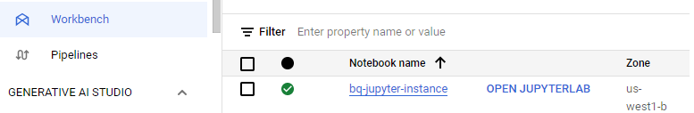
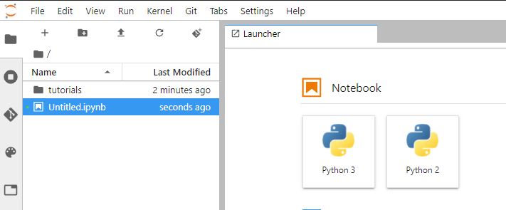
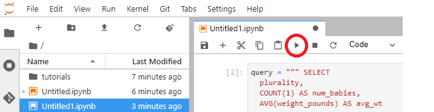
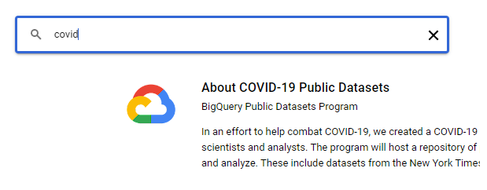
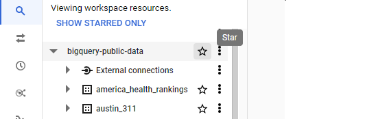
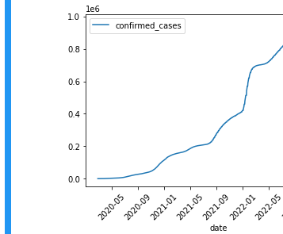

One of the more common service combinations for performing data science is to pair the backend data warehouse (BigQuery) with an interactive Python or R based Jupyter notebook. On GCP, a managed Jupyter notebook service is provided with the Vertex AI service. In this lab, we'll use the tools to perform a simple analysis of the birthweight of babies in a particular year.
First, begin by enabling the Vertex AI platform and its recommended APIs
gcloud services enable notebooks.googleapis.com \
aiplatform.googleapis.com \
dataflow.googleapis.com \
storage.googleapis.comVertex AI Notebooks wraps the configuration and startup of a Compute Engine instance that hosts an interactive Jupyter notebook that can be used to ingest data from BigQuery, process it, and generate data products from it. To begin with, we'll first want to create a service account that the instance will use to access BigQuery. Create a service account called cs430jupyter and then add an IAM policy that associates the role of BigQuery user to it.
gcloud iam service-accounts create cs430jupyter
gcloud projects add-iam-policy-binding $GOOGLE_CLOUD_PROJECT \
--member serviceAccount:cs430jupyter@${GOOGLE_CLOUD_PROJECT}.iam.gserviceaccount.com \
--role roles/bigquery.user
Run the gcloud command below to bring up an instance, attaching the service account to it.
gcloud notebooks instances create bq-jupyter-instance \
--vm-image-project=deeplearning-platform-release \
--vm-image-family=tf2-2-2-cpu \
--machine-type=e2-medium \
--location=us-west1-b \
--service-account=cs430jupyter@${GOOGLE_CLOUD_PROJECT}.iam.gserviceaccount.comSearch for Vertex AI, and then visit it from the console.
Find the instance in the Workbench and click on "Open Jupyterlab" when the instance comes up.

Create a Python 3 notebook and leave it open.

Visit the BigQuery console to compose a new query that will dump the entire table that we'll be querying, but DO NOT run the query.
SELECT * FROM bigquery-public-data.samples.natalityInstead, see the amount of data that the query will go through. This is the size of the table.
We'll be running a query to obtain data on birthweight from a publicly available natality dataset hosted on the platform.
Modify the <FMI> in the WHERE statement of the query template below with a SQL conjunction that returns the number of babies born and their average weight between 2001 and 2003 and their plurality (e.g. single, twins, triplets, etc.) in ascending order.
SELECT
plurality,
COUNT(1) AS num_babies,
AVG(weight_pounds) AS avg_wt
FROM
bigquery-public-data.samples.natality
WHERE
year <FMI>
GROUP BY
plurality
ORDER BY
plurality ASCBefore running the query, answer the following question for your lab notebook:
- How much less data does this query process compared to the size of the table?
Run the query and answer the following for your lab notebook:
- How many twins were born during this time range?
- How much lighter on average are they compared to single babies?
Go back to your notebook. We will now repeat the query in Python. Enter the query from the previous step to construct the query string in one of the cells.
query_string = """
SELECT
plurality,
COUNT(1) AS num_babies,
etc...
"""Then click on the play button to execute the command to set the query string variable.

Then, in a single cell, enter in code that imports the BigQuery Python package, creates a BigQuery client, issues the query, obtains the response as a Pandas data frame, and outputs the first three results (e.g. single, twins, and triplets). Click on the play button to execute the code.
from google.cloud import bigquery
df = bigquery.Client().query(query_string).to_dataframe()
df.head(3)The results should match your prior results in BigQuery. Using the plotting facility of Pandas, create a scatter plot that visualizes the average weight of a baby given its plurality by placing the following code in a cell and executing it.
df.plot(x='plurality', y='avg_wt', kind='scatter')The plot in the previous step shows a marked correlation between birthweight and plurality. If we were attempting to predict the birth weight of a baby that is about to be born using a machine learning model, the plurality would be a good feature to include.
In the next steps, we'll be exploring other features that might be predictive of birth weight. Go back to your notebook and run the following code in a cell.
query_string = """
SELECT
weight_pounds,
is_male,
mother_age,
plurality,
gestation_weeks
FROM
publicdata.samples.natality
WHERE year > 2000
"""
from google.cloud import bigquery
df = bigquery.Client().query(query_string + " LIMIT 100").to_dataframe()
df.head()The query produces all of the babies born after 2000, their weight, their gender, their mother's age, their plurality, and their gestation time. We have seen that plurality is highly correlated with birth weight, but what about the other attributes? To determine the answer to this question, we'll use the following function get_distinct_values(column_name) that parametrizes the initial query, but substitutes an attribute that is passed as column_name instead of using plurality. Examine the code, then paste it into a cell in your notebook and hit play.
def get_distinct_values(column_name):
query_string = f"""
SELECT
{column_name},
COUNT(1) AS num_babies,
AVG(weight_pounds) AS avg_wt
FROM
publicdata.samples.natality
WHERE
year > 2000
GROUP BY
{column_name}
"""
return bigquery.Client().query(query_string).to_dataframe().sort_values(column_name)We'll now run our queries and view their plots. First, re-run the plurality query using the function, but generate a bar graph instead.
df = get_distinct_values('plurality')
df.plot(x='plurality', y='avg_wt', kind='bar')Then, run the query using gender:
df = get_distinct_values('is_male')
df.plot(x='is_male', y='avg_wt', kind='bar')Then, run the query using gestation time:
df = get_distinct_values('gestation_weeks')
df.plot(x='gestation_weeks', y='avg_wt', kind='bar')Finally, run the query using the mother's age:
df = get_distinct_values('mother_age')
df.plot(x='mother_age', y='avg_wt', kind='bar')In examining the plots, which two features are the strongest predictors for a newborn baby's weight?
- Show the plots generated for the two most important features for your lab notebook
Google hosts a number of COVID-19 datasets that we can query and generate information from. One dataset is its mobility one that measures the impact lockdown orders had in various locales. To begin with, go to the BigQuery console Explorer, click on "ADD DATA", then select the BigQuery Public Dataset (bigquery-public-data) project.
Select the COVID-19 public dataset for the US and view it inside the BigQuery console..

Scroll up to "Star" the bigquery-public-data set for ease of access.

One of the datasets that is in the COVID-19 data is that which measures the mobility of users via their cell phone locations (covid19_google_mobility.mobility_report). Navigate to this dataset and examine its columns. Run the query below that shows how mobility decreased when shelter-in-place orders were issued in March 2020.
SELECT
*
FROM `bigquery-public-data.covid19_google_mobility.mobility_report`
WHERE sub_region_1 = 'Oregon' AND sub_region_2 = "Multnomah County" AND date between "2020-03-01" AND "2020-03-31"
ORDER BY date- What day saw the largest spike in trips to grocery and pharmacy stores?
- On the day the stay-at-home order took effect (3/23/2020), what was the total impact on workplace trips?
Another dataset that is available is one that measures vehicle traffic changes. Go to the BigQuery console, expand the bigquery-public-data drop-down, find the mobility impact dataset for the US and expand it (covid19_geotab_mobility_impact). Then click on the table airport_traffic. Find the column in this table that gives us information on the traffic impact.
Adapt the query below to find the impact on airport traffic as a result of COVID-19 lockdowns.
SELECT
airport_name,
AVG( ... ) AS traffic_fraction
FROM
`bigquery-public-data.covid19_geotab_mobility_impact.airport_traffic`
WHERE
country_name = 'United States of America (the)'
AND EXTRACT(MONTH from date) = 4
GROUP BY
airport_name
ORDER BY
traffic_fraction- Which three airports were impacted the most in April 2020 (the month when lockdowns became widespread)?
- Run the query again using the month of August 2020. Which three airports were impacted the most?
Go back to the BigQuery console, click on "Resources, expand the bigquery-public-data drop-down, find the New York Times COVID-19 dataset (covid19_nyt), and expand it. There are four tables within the dataset. Click on each and view their schemas to see the columns they have. Find the following for subsequent queries that you will need to run
- What table and columns identify the place name, the starting date, and the number of excess deaths from COVID-19?
- What table and columns identify the date, county, and deaths from COVID-19?
- What table and columns identify the date, state, and confirmed cases of COVID-19?
- What table and columns identify a county code and the percentage of its residents that report they always wear masks?
Go back to your Jupyter notebook.
Confirmed cases in Oregon
Within the notebook, perform the following query and plot the results using a line graph. The query pulls out the confirmed cases of COVID-19 across the state of Oregon by date.
SELECT date, confirmed_cases
FROM `bigquery-public-data.covid19_nyt.us_states`
WHERE state_name = 'Oregon'
ORDER BY date ASCThe plot should have the date as the x-axis in ascending order and the confirmed cases on the y-axis
df.plot(x='date', y='confirmed_cases', kind='line', rot=45)
- Show a screenshot of the plot and the code used to generate it for your lab notebook
Date when states reached 1000 deaths
One of the macabre benchmarks for states is the day in which total deaths attributable by COVID-19 reached 1000 across the state. Run the following query in your lab notebook. It selects the state name and the minimum date such that the number of deaths in the state exceeded 1000.
SELECT state_name, MIN(date) as date_of_1000
FROM `bigquery-public-data.covid19_nyt.us_states`
WHERE deaths > 1000
GROUP BY state_name
ORDER BY date_of_1000 ASC- From within your Jupyter notebook, run the query and write code that shows the first 10 states that reached 1000 deaths from COVID-19. Take a screenshot for your lab notebook.
Mask usage per county
Surveys on mask usage may be an indicator as to how severe the pandemic will hit particular counties. Run the following query in your lab notebook that ranks the top counties in the US in which survey respondents always wear masks.
SELECT DISTINCT mu.county_fips_code, mu.always, ct.county
FROM `bigquery-public-data.covid19_nyt.mask_use_by_county` as mu
LEFT JOIN `bigquery-public-data.covid19_nyt.us_counties` as ct
ON mu.county_fips_code = ct.county_fips_code
ORDER BY mu.always DESC- Take a screenshot for your lab notebook of the Top 5 counties and the states they are located in.
Using your Jupyter notebook, perform the following...
Deaths in Multnomah county
Construct a query string that obtains the number of deaths from COVID-19 that have occurred in Multnomah county for each day in the dataset, ensuring the data is returned in ascending order of date. Run the query and obtain the results.
- Plot the results and take a screenshot for your lab notebook.
Deaths in Oregon
Construct a query string that obtains the number of deaths from COVID-19 that have occurred in Oregon for each day in the dataset, ensuring the data is returned in ascending order of date. Run the query and obtain the results.
- Plot the results and take a screenshot for your lab notebook.
Delete the notebook
gcloud notebooks instances delete bq-jupyter-instance \
--location us-west1-b